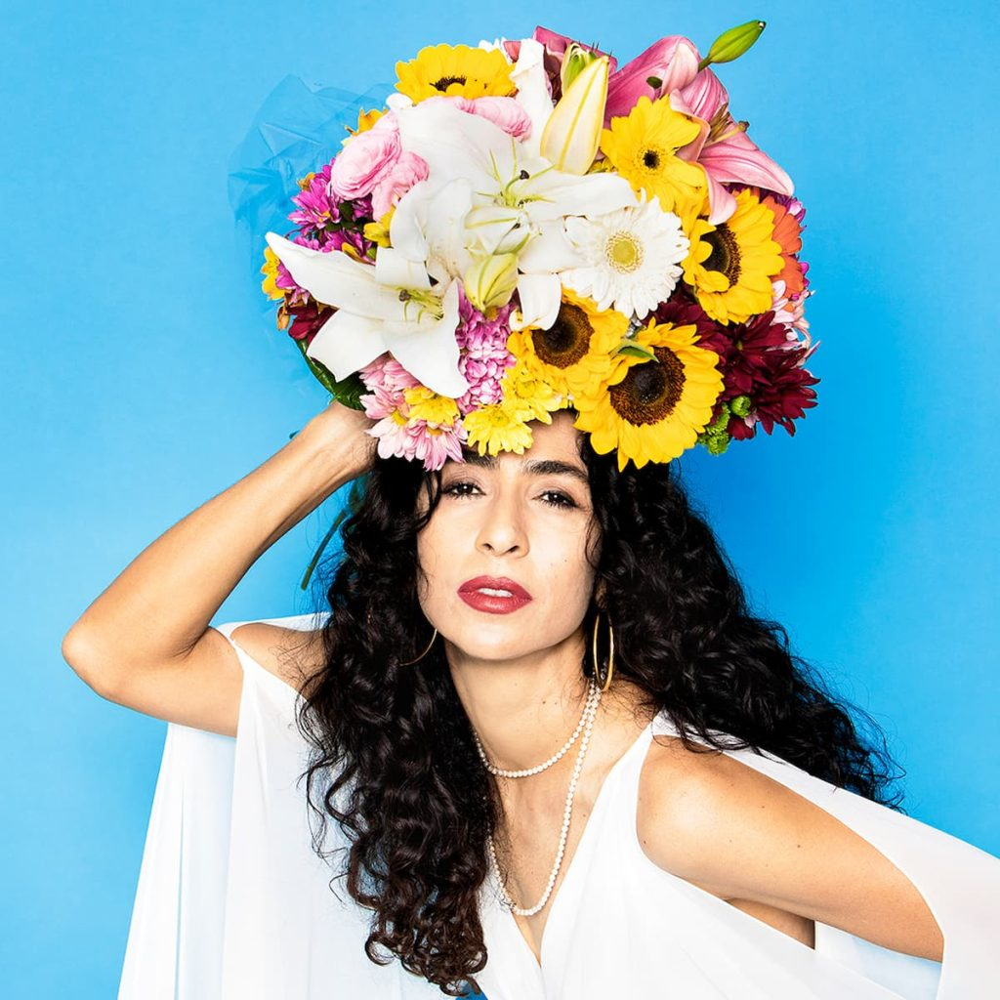
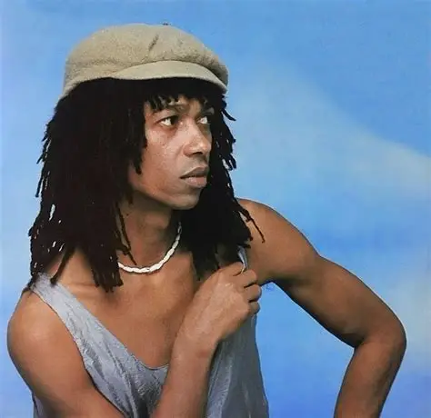
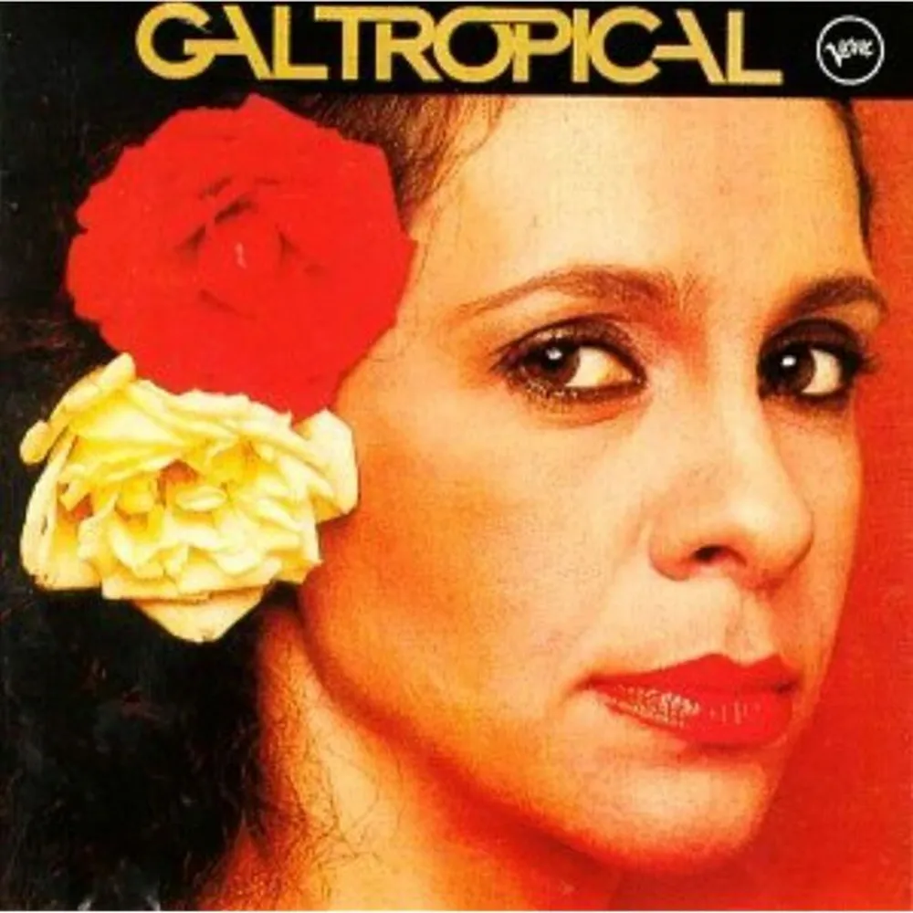

Aqui no meu blog vou contar sobre artistas que eu acho interessante!
Boas vindas ao meu novo blog! Aqui vou falar de artistas que eu gosto! Começando com a...

Marisa Monte é uma cantora, compositora e musicista brasileira. Ela é um dos maiores nomes do MPB!
A musica mais conhecida dela é. . .
e o album mais conhecido é . . .
Aos 19 anos, foi morar em Roma para estudar canto lírico e ópera
Ela foi descoberta em 1987 pelo jornalista e produtor musical Nelson Motta, quando ela retornou ao Brasil após morar em Roma, na Itália.
Ela também participa da banda Tribalistas! Formou o famoso trio Tribalistas em 2002 ao lado de Arnaldo Antunes e Carlinhos Brown!
Na infância, estudou piano e bateria antes de focar no canto!
Em 1982, com apenas 15 anos e ainda na escola, participou do musical The Rocky Horror Show, de Miguel Falabella. Nesta época, já focava os seus estudos no canto lírico
OIOIOI denovo!! Hoje temos um novo cantor para saber outras curiosidades !!
E o cantor dessa vez é . . .

Djavan Caetano Viana (Maceió, 27 de janeiro de 1949) é um cantor, compositor, arranjador, produtor musical, empresário e violonista brasileiro. Suas canções mesclam inúmeros estilos, entre eles 𝒐 𝒋𝒂𝒛𝒛, 𝒐 𝑺𝒐𝒖𝒍, 𝒐 𝒃𝒍𝒖𝒆𝒔, 𝒐 𝒔𝒂𝒎𝒃𝒂, 𝒂 𝒃𝒐𝒔𝒔𝒂 𝒏𝒐𝒗𝒂 𝒆 𝒂 𝒎𝒖́𝒔𝒊𝒄𝒂 𝒇𝒍𝒂𝒎𝒆𝒏𝒄𝒂, 𝒄𝒐𝒎 𝒈𝒓𝒂𝒏𝒅𝒆 𝒊𝒏𝒇𝒍𝒖𝒆̂𝒏𝒄𝒊𝒂 𝒅𝒂 𝑴𝑷𝑩 𝒆 𝒂 𝒎𝒖́𝒔𝒊𝒄𝒂 𝒓𝒆𝒈𝒊𝒐𝒏𝒂𝒍 𝒏𝒐𝒓𝒅𝒆𝒔𝒕𝒊𝒏𝒂
o album mais conhecido é . . .
e a musica mais conhecida é
Em 1981 e 1982, Djavan leva o prêmio de melhor compositor pela Associação Paulista dos Críticos de Arte. O ciclo vitorioso de lançamentos pela EMI-Odeon encerra-se em 1981, com o álbum Seduzir. Um disco de afirmação, como o próprio Djavan escreveria em seu encarte: "O pouco que aprendi está aqui. Pleno. Dos pés à cabeça". Depois de uma viagem de Djavan à cidade de Luanda na Angola, acompanhado de Marieta Severo, Chico Buarque, Zezé Motta, Gonzaguinha, Paulinho Nogueira e Walter Franco surgem as primeiras canções a falar da África e o início das turnês pelo Brasil, guiadas pela produtora Monique Gardenberg e o diretor Paulinho Albuquerque. O álbum Seduzir foi avaliado pela Allmusic com nota máxima, onde o crítico Alex Henderson compara as composições e estilo musical de Djavan aos do Beatles e Stevie Wonder, além de citar como significantes faixas musicais como "Seduzir", "Morena de Endoidecer", "Jogral" e "Faltando um Pedaço". Outra herança do Seduzir foi a primeira banda própria, de nome "Sururu de Capote", composta por Luiz Avellar no piano, Sizão Machado no baixo, Téo Lima na bateria e Zé Nogueira nos sopros.
Djavan foi casado com Maria Aparecida Viana de 1972 a 1998 no enlace tiveram três filhos Flávia Virgínia (1972), o músico Max Viana (1973) e João Thiago (1978).[23] Casou novamente em 2000, com a designer Rafaela Brunini com quem está até os dias atuais, juntos tiveram Sofia Viana (2004) e Inácio Viana (2008) [24] É avô de quatro netos: Gabriel e Manuela, filhos de Max Viana, Lui Viana filho de João Thiago e Thomas Boljover filho de Virginia.
OIOI denovo!! Hoje teremos. . .

Na Década de 1960 Gal estreou ao lado de 𝑪𝒂𝒆𝒕𝒂𝒏𝒐 𝑽𝒆𝒍𝒐𝒔𝒐, 𝑮𝒊𝒍𝒃𝒆𝒓𝒕𝒐 𝑮𝒊𝒍, 𝑴𝒂𝒓𝒊𝒂 𝑩𝒆𝒕𝒉𝒂̂𝒏𝒊𝒂, 𝑻𝒐𝒎 𝒁𝒆́ 𝒆 𝒐𝒖𝒕𝒓𝒐𝒔,, o espetáculo Nós, Por Exemplo... (22 de agosto de 1964), que inaugurou o Teatro Vila Velha, em Salvador. Neste mesmo ano participou de Nova Bossa Velha, Velha Bossa Nova, no mesmo local e com os mesmos parceiros
Em 2012, Gal Costa foi eleita a sétima maior voz da música brasileira de todos os tempos, pela revista Rolling Stone Brasil.[22] Depois de sete anos longe de discos e shows, Gal Costa estreou a turnê do elogiado álbum Recanto no Rio de Janeiro. Com direção de Caetano Veloso, autor de todas as músicas do CD, o show inaugurou a sofisticada casa de shows, à beira da lagoa Rodrigo de Freitas, Miranda.
Gal Costa morreu em 9 de novembro de 2022, aos 77 anos. A assessoria da artista não esclareceu o motivo concreto do óbito.[31] A cantora havia completado 57 anos de carreira e seria uma das atrações do festival Primavera Sound, que aconteceu em São Paulo no fim de semana anterior ao falecimento. A participação de Gal foi cancelada de última hora em razão da necessidade de recuperação da cantora após ter sido submetida a uma cirurgia para retirada de um nódulo na fossa nasal direita
O corpo de Gal foi velado no dia 11 de novembro, no Hall Monumental da Assembleia Legislativa de São Paulo (Alesp), onde milhares de fãs puderam se despedir da cantora e prestar homenagens. No mesmo dia, seu corpo foi sepultado no Cemitério da Ordem Terceira do Carmo, no bairro da Consolação, também na capital paulista.[34] Gabriel Costa, único filho da cantora, através da advogada Luci Vieira Nunes, no entanto, requereu judicialmente a exumação do corpo da mãe, com o objetivo de fazer o translado dos restos mortais para um jazigo perpétuo no Cemitério São João Batista, no Rio de Janeiro (RJ), que ela já havia comprado para que fosse enterrada junto com sua mãe
Gal Costa era reservadamente bissexual, e ao longo dos anos ficaram conhecidos seus relacionamentos afetivos com anônimos e famosos, dentre eles, os cantores Tom Zé e Jorge Ben Jor,a cantora Marina Lima e a atriz Lúcia Veríssimo.